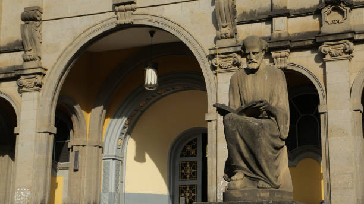

The Holy Trinity Cathedral

| Location | Arat Kilo, Addis Ababa, Ethiopia |
| Coordinates | 12°36'27″N 37°27'33″E |
| Climate | mild and warm temperate |
Holy Trinity Cathedral, also known in Amharic as Kidist Selassie, is the highest ranking Ethiopian Orthodox Tewahedo cathedral in Addis Ababa, Ethiopia. It was built to commemorate the Ethiopian victory over Italian occupation and is an important place of worship in Ethiopia, alongside other cathedrals such as the Church of Our Lady Mary of Zion in Axum.
History
The massive and ornate cathedral of the Holy Trinity church construction started in 1936 and finished in 1944, was built by Emperor Haile Selassie l. It is one of the architecturally decorated, spacious, splendid stained glass windows and well-designed churches in Ethiopia. As well as being the burial place for Haile Selassie and his wife and the Patriots who fought for Ethiopia's liberation from the Italians, it also has a small but very moving mausoleum to the leaders killed following the downfall of the Emperor in the grounds. Inside the church are some grand murals, the most notable being Afewerk Tekle's depiction of the Holy Trinity, with Matthew (man), Mark (lion), Luke (cow), and John (dove) peering through the clouds, the immense stone coffins of the Emperor and his wife as well as some relics of the Emperor's time. Outside, there are statues of angels and the four Bible writers. To the west of the cathedral is the tomb of the famous British suffragette Sylvia Pankhurst. Sylvia was one of the very few people outside Ethiopia who protested Italy's occupation; she moved to Addis Ababa in 1956. There is also a small museum on the grounds that has over 146 various religious manuscripts, icons, ceremonial items, paintings, gold, silver embroidered robes, umbrellas, crosses, and books that date from the 15th century AD.
Click here to learn more about the holy trinity cathedral found in Addis Ababa.
Play the Video to preview the experience.